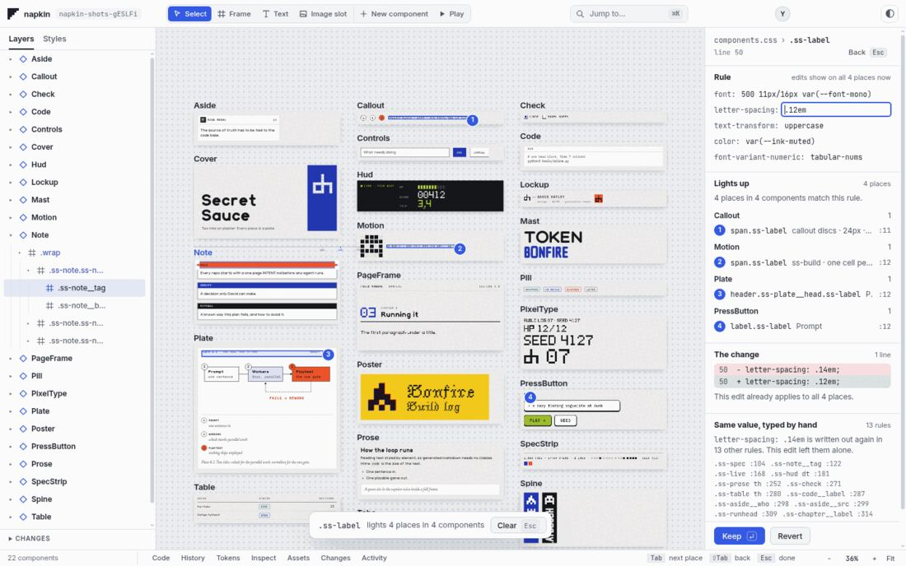
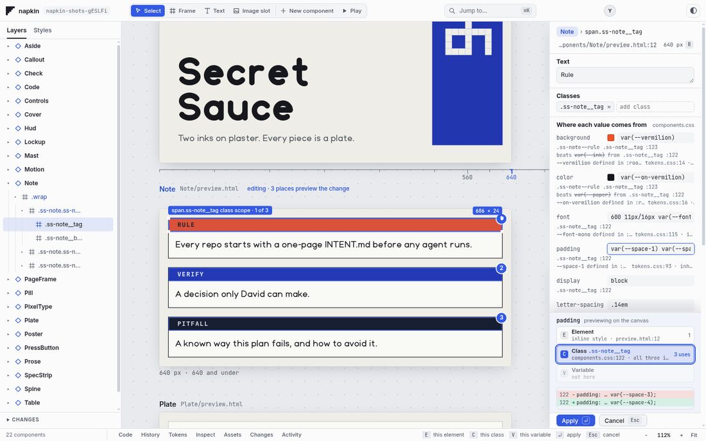
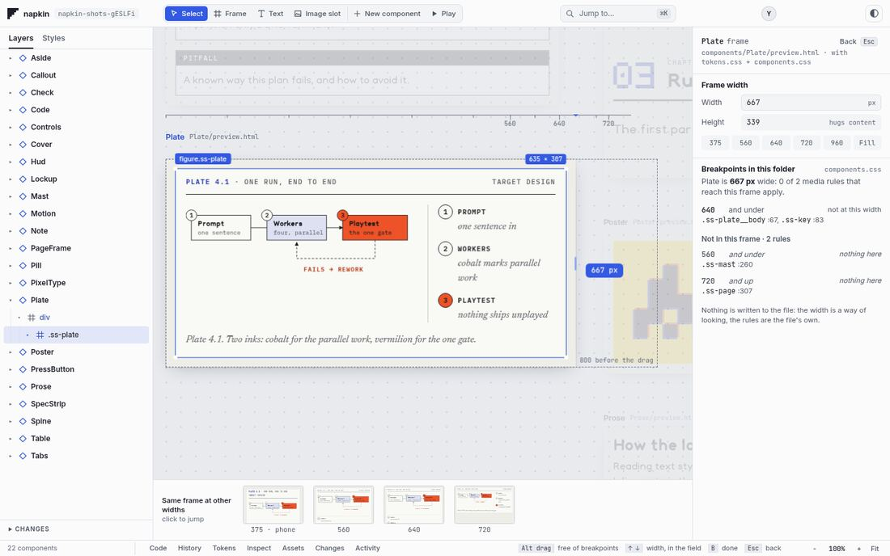
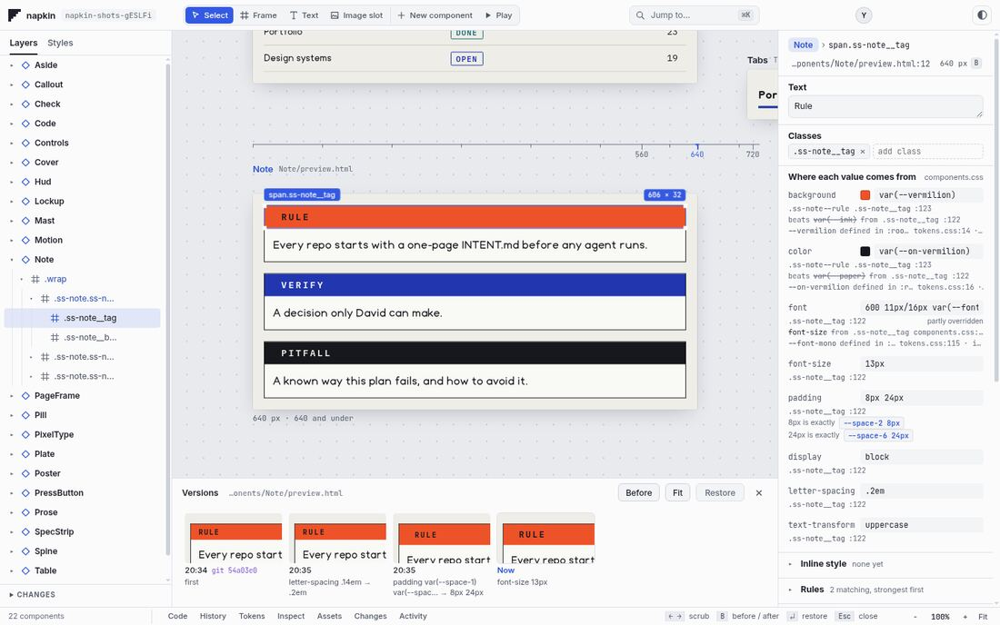
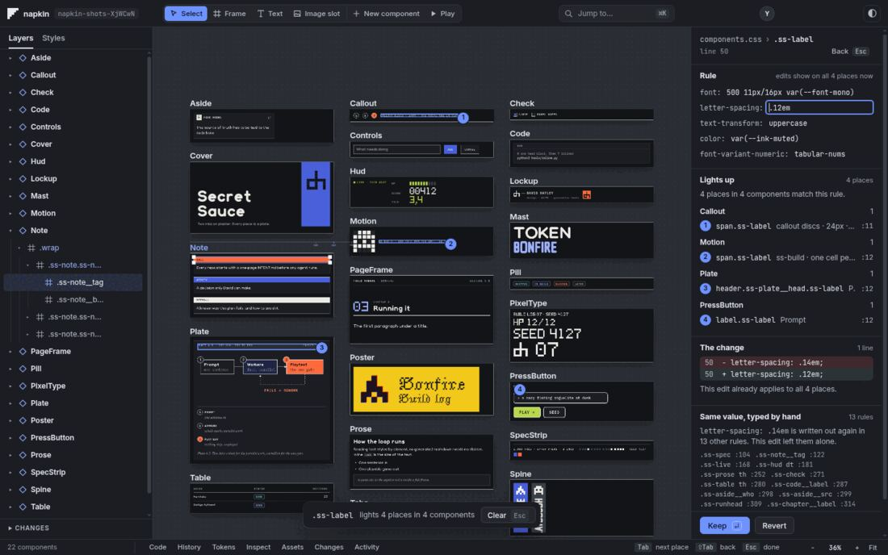
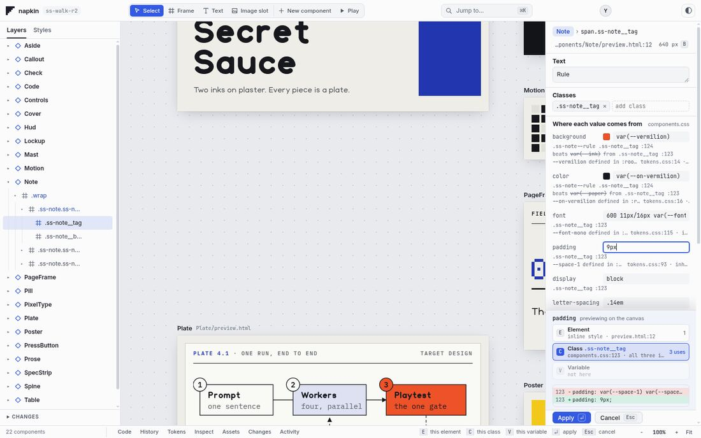

What happened
The record of the napkin dream-gauntlet, from its start on 2026-10-21 to your stop on the night of 2026-10-30, with what else moved in your other projects.
napkin went through two gauntlets. The first passed 140 of 141 criteria and then failed the only test that mattered to you: it couldn't open your own design system. The second rebuilt the core so it opens any folder and edits files byte for byte. That core is sound and measured. The interface is good in places, and two blind critics in a row said a designer would not choose it over Figma yet. You stopped the third smoothing round before it changed anything.
Where things stand
The work is safe on branches. Nothing is running. Nothing went to main.
| Branch | Commit | Holds | Checked by |
|---|---|---|---|
feat/core | 8c63586 | Run 1, the favicon fix, INTENT change, Dream 2 page | Run 1 critics |
feat/html | be00255 | Measures, engine, inspector, canvas, film strip, merged | Blind correctness critics; my full run: 804 tests, 0 failing |
area/html-smooth | f7b2e87 | Two smoothing rounds on top of feat/html, not merged | Blind critic: 830 tests, 0 failing, measures pass, not ready |
The timeline
Nine days on the first idea, one long day on the second.
- napkin starts: intent, agent rules, landing copy. 24 commits before the gauntlet.
- Run 1 begins. 141 criteria in 17 areas. Parallel builders and blind critics; 131 commits that day.
- First whole-product walk fails two of five scenes and files 22 gaps. 72 commits.
- Keyboard and pan rounds, a second walk, 15 more gaps, round 6. 140 of 141 pass. FEEL-02 waits for you.
- You pause the build to review it.
- You ask to load Secret Sauce. napkin finds 0 components. You also correct the logo: my fix had used your DH mark, and it's now the 5×5 folded napkin. You say napkin should be HTML/CSS first and render what it loads, and ask for a re-dream.
- You approve Dream 2. INTENT and decision 0013 change with your agreement.
- Locked measures written. Today's engine scores 0 of 82 renders, 0 of 60 edits, 0 of 5 folders.
- New engine built. By 03:54 it passes every measure, checked twice blind, and merges.
- Inspector, canvas and film strip start in parallel. Rounds run all day, with two usage-limit stops.
- All three merged into feat/html. 804 tests, 0 failing.
- Two smoothing rounds on the merged product, each rescored by a fresh Opus critic. Both say not ready.
- You stop round 3 and ask for this record.
What's actually built
The foundation meets its bar. It's the part I'd trust most.
| Measure | Bar | Today's engine, before | Now |
|---|---|---|---|
| Renders like a browser | 100% render, ≤0.1% of pixels differ | 0 of 82 | 83 of 83 render; 80 compared, worst 0% |
| Edits are exact | Only the changed bytes move, undo is byte exact | 0 of 60 | 60 of 60 |
| Nothing imposed | 1 command, no files added, first view ≤2 s | 0 of 5 folders | 5 of 5; Secret Sauce about 0.5 s |
Three shadcn components have no reference to compare, because they need app context to run at all. They count as rendered, not as compared.






The moments, by score
The bar is 8, marked on each bar. Critics changed each round and dug in new places, so a drop isn't always a regression.
| Moment | Scores, oldest first | Latest | What holds it back |
|---|---|---|---|
| Copy real code | 8 · 9 · 9 · 9 | 9 | No visible Copy control |
| Responsiveness | 6.5 · 7 · 7 · 8.5 | 8.5 | Esc drops the selection after the panel |
| Measurement | 6 · 6 · 6.5 · 8 · 8.5 | 8.5 | Reaches only one parent up |
| Zero chrome | 8 · 9 · 9 · 8.5 | 8.5 | Nothing shows the way back |
| Theme wipe | 7.5 · 8 · 9 · 8 | 8 | Caption pills awkward on the line |
| Alive (Space-P) | 6 · 9 · 7 · 7.5 | 7.5 | P then Esc drops the selection |
| One rule lights up | 6 · 7 · 7 · 7 | 7 | Stale outlines; Revert undoes only part of "Change all" |
| Film strip | 6.5 · 6 · 7 · 7 | 7 | Banner overprints; labels often useless |
| Edit at scope | 6 · 7 · 6 · 7 · 6.5 | 6.5 | First edit throws the frame off-screen |
| Variables | 5.5 · 8 · 7 · 8 · 6.5 | 6.5 | Diff shows 1 line, writes 2; flags nearly absent |
| Agent ghost alternatives | none | not built | The agents piece never started |
The second column mixes separate critics, so read it as a trail and not a trend line. Correctness-only rounds aren't scored and don't appear.
What's still wrong
The last critic's verdict: not tomorrow. These are the reasons, worst first, none of them fixed.

- A first edit from the zoomed-out view moves the component off-screen, and it stays moved after Cancel. Typing also zooms to 100%, which hides the reach of a system-wide change.
- Above 40 components, counts are wrong. 6 places reported where the files hold 12, and some frames can't be selected.
- React is mostly empty. 1 of 7 shadcn components draws something useful. The others need props or app context, and napkin can't supply either.
- Old drawers say false things, including "Configure tokens.source in napkin.json", which breaks your decision that nothing is required. There are two histories and three token surfaces.
- Some refusals are silent. Adding a class on a
cvaelement does nothing, and Cmd-K can't find a class or a variable. - Esc drops the selection after Breakpoints and Play.
- Stale outlines stay on screen with nothing selected.
- A variable's diff shows one line when two get written, and the panel can show the wrong theme's value.
- Film strip noise: the banner overprints the inspector, undo tiles flood the strip, and labels cut off the part that differs.
- Revert after "Change all" undoes only the last step.
- Off-scale flags barely exist: 1 in about 140 elements.
- Four serious or critical accessibility failures in the older panels, and some wrong wording.
The critic also named these: double-click doesn't edit text, the frame tool silently does nothing over HTML, and Layers truncates hard. It said napkin is already better on small HTML folders for true responsiveness, exact provenance and copying real code.
Who decided what
Your decisions, and the ones I made without you that you may want to overrule.
You decided
- HTML/CSS first, React also supported, no imposed tokens.
- Approve Dream 2 and change INTENT.
- Undefined variables: ask once, remember outside the folder.
- Work on a copy of Secret Sauce.
- Quality that makes a designer prefer napkin, not a one-to-one Figma match, and inspiring as well as good.
- The napkin glyph everywhere, never your DH mark.
- Stop round 3.
I decided, the AI lead
- Started the engine and every later piece before you locked the mockups, which still aren't locked.
- Rewrote or amended about a dozen old tests where they contradicted decision 0013. Each is logged. The critics judged the amendments stricter or intent-keeping.
- Ended rubric rounds on the inspector and film strip when scores stalled, and merged them on correctness, below the visual bar.
- Accepted limits: 20 of 60 frames as placeholders at fit-all, a reload peak of 46 frames, and three restore edge cases.
- Clicking elsewhere cancels a staged edit.
- Ruled that the old drawers must not say false things. Never carried out.
Builders and critics were AI agents throughout: Sonnet for lanes and most critics, Opus for the engine, smoothing, merges and whole-product critics. Decisions 0014, 0015 and 0016 are still marked proposed and wait for you, as do 0006 to 0012 from run 1.
My mistakes on the record
- My first favicon fix used your DH mark.
- I told builders the corpus was checked in, then gave a
--keepflag that doesn't exist for that script. - One critic called a keyboard test failure a regression, and I sent a builder after it. Ten alternating runs showed the same flake on the old code: 3 of 10 against 4 of 10.
- I kept reporting builders' claims in detail between checks, and you were asked the same four questions many times.
The rest of your portfolio
This gauntlet only worked in napkin. Everything below came from other sessions or from you. I read git logs only and changed nothing.
| Project | Commits since 10-21 | Last | What the log shows |
|---|---|---|---|
| portfolio | 127 | 10-30 | Audit fixes, new home and case pages, Lab board, Drawing mode in 6 rounds, a gas chromatograph figure in Background. Auto-deploy commits are included. portfolio-fonts is a second checkout showing the same count. |
| tasty_tunez | 42 | 10-28 | Rail, library, arrange and inspector rounds, then open-source prep under Apache-2.0. 30 uncommitted changes. |
| playdough | 17 | 10-30 | Studio and v1 base, a prompt-to-game loop, then decision 0011: archive the toolkit and earn tools by making many games. |
| secret-sauce | 17 | 10-27 | v1 system, font foundry with 15 new families, Archivo retired for Hoop. SKILL.md is modified, not by this run. |
| mise_en_place | 11 | 10-22 | CLI, prep-pack spec, skills, landing page. |
| nibble | 9 | 10-30 | Kev-4B shadcn picker experiment and its fine-tune. Uncommitted web files. |
| local-mobile-research | 8 | 10-22 | Renamed to lmr, Pages site, Android spike. |
| stem-foundry | 6 | 10-22 | Font tool: core, web app, tests. |
| 3060-recipes | 5 | 10-30 | New: a DeepSeek v4.1 Strata experiment, with measured results. |
| font-promo | 5 | 10-28 | 35 s font library promo and a Dive Club cut. |
| onecard | 4 | 10-28 | GPU queue and memory caps as a tool. |
| bonfire | 3 | 10-22 | Landing page and stranger README. |
| stem7 | 2 | 10-27 | Stem 7 1.001; site moved into the font library. |
| napkin | 193 | 10-30 | This record. |
The list covers repos directly under ~/Projects with commits since 10-21. These lines are my reading of commit messages, so they say what was recorded, not whether it works.
Spend
ccusage today reports $1,195.89 for 10-21 to 10-30, machine-wide across every session above: 10-30 $203, 10-29 $159, 10-28 $125, 10-27 $85, 10-24 to 26 $24, 10-23 $257, 10-22 $242, 10-21 $102. There's no napkin-only figure.
What's waiting for you
Nothing here is running. It all holds until you say.
| Item | The choice |
|---|---|
| Next step | Try area/html-smooth yourself first. Then pick: resume round 3, stop at the core, or redirect. |
| Mockups as the bar | Lock them, or change them. Every score above assumes them. |
| React props | Build a way to give components props and context, or accept that real React folders mostly show blanks. |
| Budget | No cap has been set. The run hit usage limits twice on 10-30. |
| Agents and the proving demo | Not started: ghost alternatives, the demo on HTML, and the designer panel. |
| Run 1 leftovers | FEEL-02, N8, and whether 0006 to 0012 still stand. |
Left running or lying around
- Four stray test servers from critics. All four were still alive when I checked just now. My safety checks blocked agents from stopping two of them, so they're yours to stop:
! kill 505373 505364 3823829 3862197 - 80
napkin-p0-*folders in/tmp/claude-1000, from measure runs./tmpis at 32% of its file slots. I'll delete them only if you say so. - An old napkin copy on your tailnet at port 8444, serving the 10-21 build with full edit access on fixtures. It's still running. Stop it with
tailscale serve --https=8444 offand by ending the process on port 4820. - Six napkin worktrees for this run, under
~/Projects/.worktrees/.
To open it yourself
cd ~/Projects/.worktrees/napkin-html-smooth
node src/cli.js open <a copy of a folder>Edits write to the folder you open, so point it at a copy.